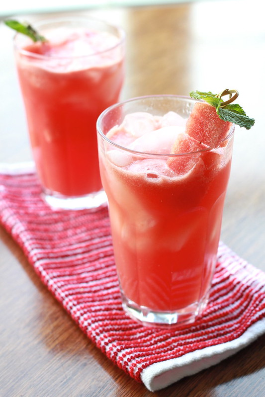

Watermelon Lemonade

A delicious and refreshing summer beverage
Other fruits can be used as well!
Ingredients
- 4 Cups Cubed Watermelon
- 1/2 Cup White Sugar
- 1/2 Cup Water
- 3 Cups Cold Water
- 1/2 Cups Fresh Lemon Juice
- 6 Cups Ice Cubes
Steps
- Place watermelon into a blender; cover and puree until smooth. Strain through a fine mesh sieve.
- Bring sugar and 1/2 cup water to a boil in a saucepan over medium-high heat until sugar dissolves, about 5 minutes. Remove from heat; stir in 3 cups of cold water and lemon juice.
- Divide ice into 12 glasses; scoop 2 to 3 tablespoons of watermelon puree over ice, then top with lemonade.
- Gently stir before serving.
Home